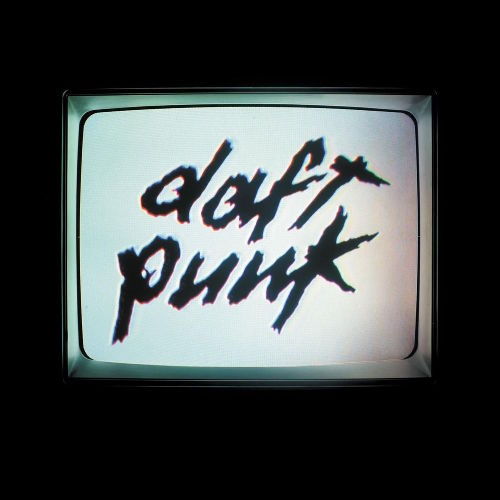

Daft Punk - Human After All
7🡲
for robots, by robots | 2025.05.17

when Daft Punk's Thomas Bangalter and Guy-Manuel de Homem-Christo said they were obsessed with “doing the opposite†after releasing their techno-optimistic album Discovery, they weren’t kidding! as opposed to the meticulous and precise process that went into Discovery, Human After All was made in six weeks, and unlike its lovingly sample-filled older brother, Human After All features just one sample. a sample which is… repeated over and over again, with little to no contribution from the duo. we’ve seen this time and time again. an artist off the heels of an incredibly acclaimed album becomes seduced with the idea of throwing an artistic left-hook as a sort of way to alienate their audience; think “Pinkertonâ€, or “Yeezusâ€. but it’s difficult to name an example where the two projects are so different yet symbiotic with each other, because looking deeply into how Human After All is made, it’s clear that there’s more than the veil of rushed production when it comes to how dry and uninviting it feels.
repetition remains a prevalent aspect of this album, with most, if not all tracks off this album consisting of one or two good bars that are repeated constantly throughout its runtime. and while this on its face seems par for the course for a dance record, Daft Punk seemed to take a different approach. unlike Discovery, where every repetition serves to uplift the song over time (see “One More Time†and “Too Longâ€), the cold and clashing profile of this record renders every repetition akin to being bashed over the skull with a hammer. this approach is also quite thematic! “Television Rules the Nation†is a sort of cruel irony, a simple comment on the propaganda machine, which itself is transmuted to the same oppressive propaganda. “Technologic†reduces everyday interactions with tech to simple commands, a rather cynical song that has a sort of jaded attitude towards how ephemeral technology seems to be. ironically, they used this song in an iPod commercial! an Apple device that is doomed to fail because of its spinning hard drive!
it’s not inviting, and it’s certainly not as pretty, but this sort of tongue-in-cheek attitude is critical when it comes to understanding why Human After All is composed with the cynicism and paranoia the tracks are laden with. Human After All is the devil’s advocate follow up to what Discovery set out to say, contrasting its techno-optimism with how cold and technology can be. it distorts the repetition of its predecessor, transforming it into a device that leaves a metallic taste in your mouth. of course, it’s not a perfect artistic statement, with “The Brainwasher†having poorly executed dalek-esque vocals, which quite frankly make the track fall flat on its face. it tries very hard to be scary, but ultimately the pvc pipe-esque synth makes it sound like a poorly recieved Doctor Who episode from 1963. additionally, while its contrast to Discovery is fundamental as to what it has to say, it also compromises how much the album could stand on its own. without Discovery, would its unpolished nature be self-reliant, or fail to convey its message without it? i honestly don’t think it would be as strong if that were the case.
but regardless, this album certainly does round out Daft Punk’s ability to re-invent themselves with every project they put forward. they’ve dared to do something different, even if commercially speaking it is the equivalent of snatching defeat from the jaws of victory. that’s killer.
FAV TRACKS: HUMAN AFTER ALL, THE PRIME TIME OF YOUR LIFE, TELEVISION RULES THE NATION, TECHNOLOGIC
LEAST FAV TRACKS: THE BRAINWASHER